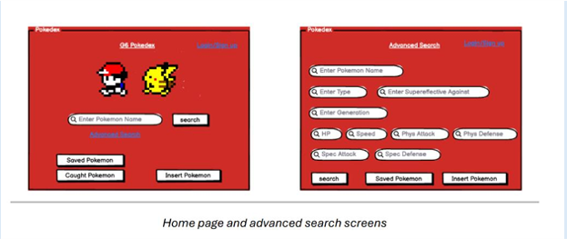

Pokedex Database
Summary
Designed and implemented a relational SQL database using Azure Data Studio to store, manage, and query Pokémon data. The project demonstrates database design, data modeling, SQL development, and business requirements analysis.
Buisness Problem
The primary challenge was to create a normalized relational database that accurately modeled the relationships between Pokémon entities while ensuring data integrity, reducing redundancy, and enabling efficient SQL-based reporting. The project required applying database design principles, including entity relationship modeling, normalization, primary and foreign key constraints, and query optimization.
Database Design
The database was designed to store and manage information related to Pokémon species, trainers, abilities, types, moves, and evolutions. The dataset consists of multiple interconnected tables linked through primary and foreign key relationships.
| Table Name | Description | Key Fields |
|---|---|---|
| Pokemon | Stores core Pokémon information. | Pokemon_ID (PK) |
| Types | Stores Pokémon type information. | Type_ID (PK) |
| Abilities | Stores Pokémon abilities. | Ability_ID (PK) |
| Evolutions | Tracks Pokémon evolution paths. | Evolution_ID (PK) |
| Trainers | Stores trainer information. | Trainer_ID (PK) |
| Moves | Stores move characteristics and power. | Move_ID (PK) |
Conceptual Model

Logical Model

The resulting database supports core aspects of the Pokémon gameplay experience by connecting users with Pokémon, their types, base stats, and generations. Users can create accounts to track the Pokémon they have captured, while non-registered users can still query the database as a Generation 6 Pokédex resource. This dual functionality ensures accessibility for both active players and casual users. The primary goal of the database is to serve as a comprehensive reference tool for Pokémon players. By enabling users to explore Pokémon attributes, types, and generational data, the system supports strategic gameplay decisions. Players can run queries to identify and target specific Pokémon, helping them develop more effective battle strategies. This solution is designed for a wide range of users—from competitive players seeking a strategic advantage to casual fans interested in learning more about different Pokémon.
The conceptual model identifies the primary business entities and their relationships.
